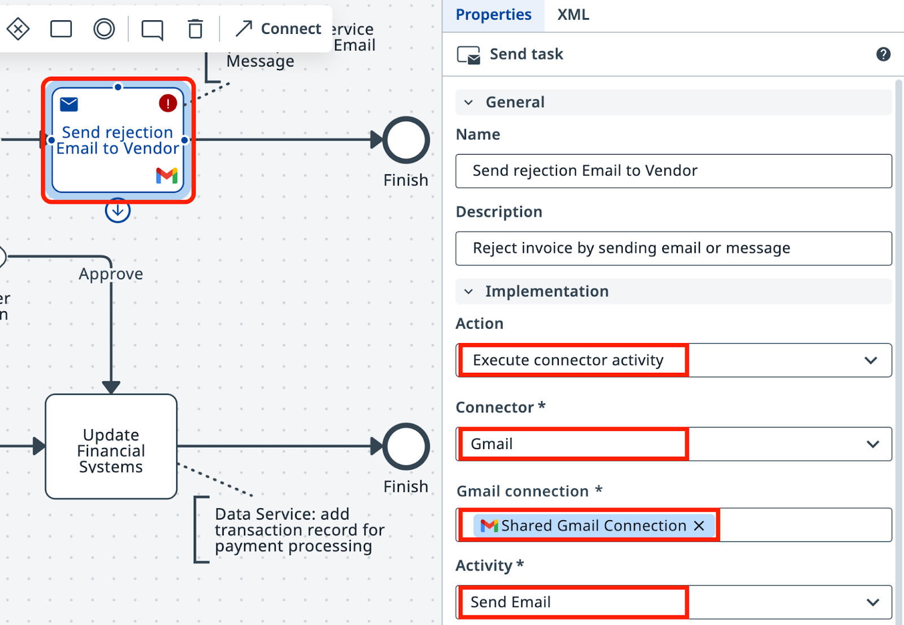
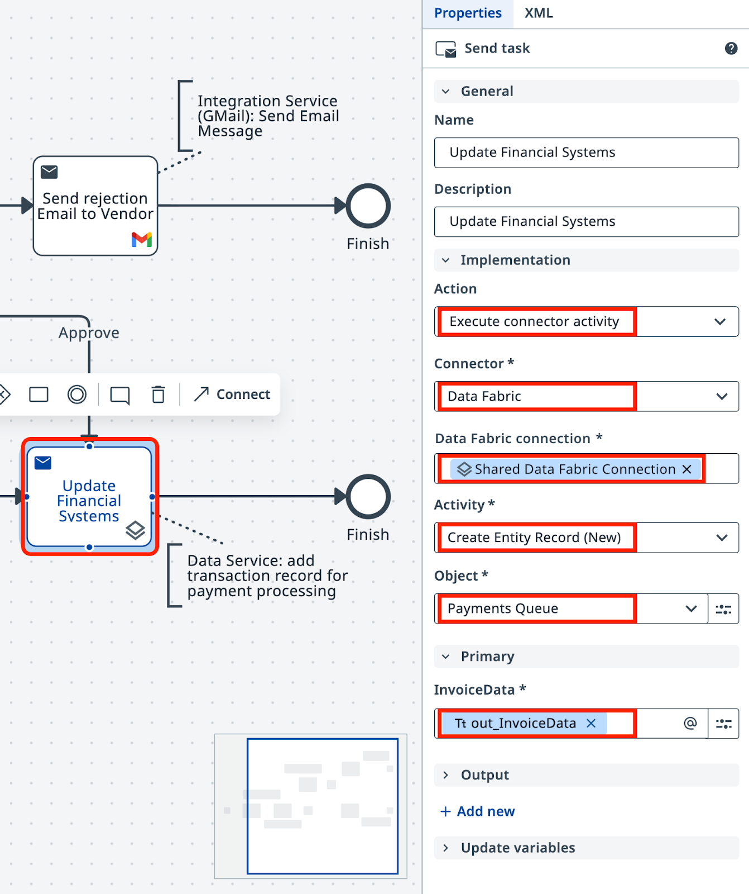
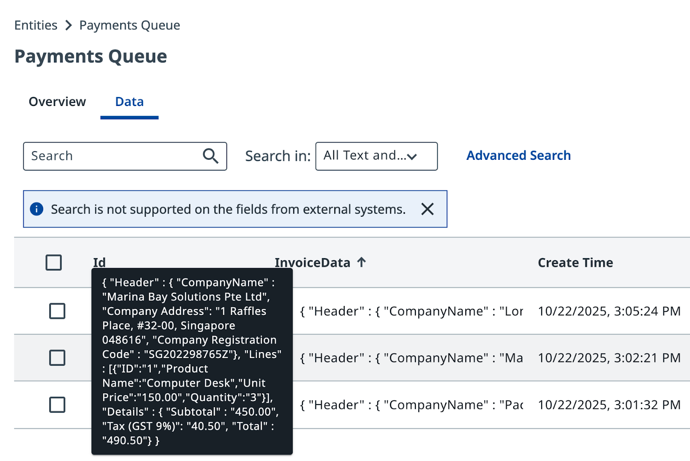
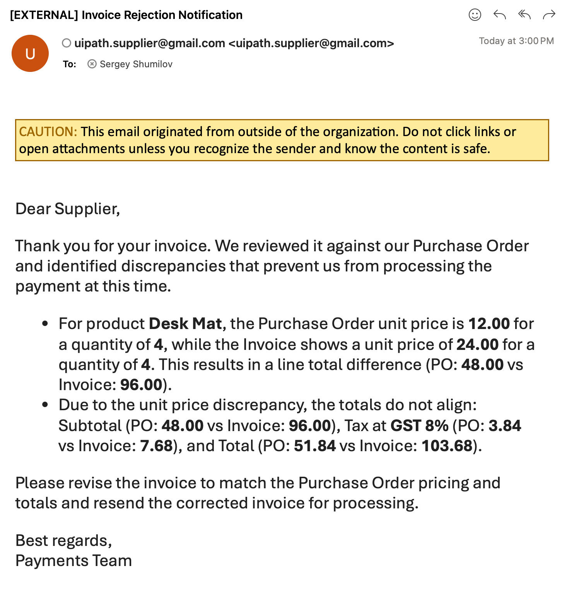

Update external systems using API¶
Here is our plan for this lesson:
- Send an email to the Supplier with the rejection reason and a request to fix it. Use the email draft from the previous steps.
- Send all Approved Invoices to the Data Fabric database so that the finance team can process payments via their App.
Goal¶
Add the final two tasks to the workflow: send a rejection email to the supplier when an invoice is rejected, and store approved invoice data in Data Fabric for payment processing. Both use Integration Service connectors already configured in your tenant.
Validation Form helps to make sure the post-processing is executed confidently based on data that has been verified. Let's complete the process!
Integration Service and Data Fabric¶
UiPath Integration Service is the fastest and most convenient way to automate API-enabled applications. It handles authorization and authentication, centralizing API connection management and enabling faster SaaS platform integration.
Two connections are available in this tenant:
- Gmail — a shared mailbox for sending emails
- Data Fabric — shared data storage for tables, files, and other structured data
Platform administrators have prepared these connections for automation use and manage security and access restrictions. You don't need to configure authentication.
Tenant check
Make sure you're using the correct tenant. Contact your trainer if there are issues with connections.
Steps¶
Part 1: Configure the rejection email¶
-
In your Maestro Agentic Process, select the task on the Reject path.
-
Set the action type to Execute Connector Activity.

-
Select the Gmail Connector and configure the Shared Gmail Connection.

-
Configure the Send Email activity:
- To: send it to yourself or a colleague.
- Subject: generate a suitable subject.
-
Body: select
out_SuggestedResponse— the HTML rejection email drafted by the agent and reviewed during human validation.
-
Save the task.
Part 2: Store approved invoice data in Data Fabric¶
For approved invoices, pass the invoice data to the payments team. They use their own UiPath Automation connected to Data Fabric, so push data there.
-
Select the task on the Approve path.
-
Set the action type to Execute Connector Activity.

-
Maestro/Agentic Orchestration works with Data Service via Integration Service, so select the Data Fabric connector and configure it with the specified parameters.

Part 3: Test both scenarios¶
-
Test both scenarios. Remember — the initial RPA job has an input parameter controlling Invoice mismatch probability with Purchase Orders.
Run the process several times. After a few runs: - Check Data Fabric — approved invoices accumulate as records. - Check the inbox — HTML-formatted rejection emails arrive for rejected invoices.

After several runs, Data Fabric accumulates data and rejection emails arrive in your mailbox as nicely formatted HTML messages.
Everything works as planned!
The process is complete. It retrieves invoice PDFs, extracts and validates data using IXP, routes exceptions to human review, sends rejection emails, and stores approved records — all orchestrated by Maestro.